远征 · 18个主要界面整改对照
全部是引擎原生渲染，使用隔离演示存档。背包品种与HUD地点前后不完全相同；不能据截图推断功能变化。
上轮审查画面 · 标题 本轮原生运行 · 标题
本轮原生运行 · 标题
上轮审查画面 · 营帐 本轮原生运行 · 营帐
本轮原生运行 · 营帐
上轮审查画面 · 城镇 HUD本轮原生运行 · 城镇 HUD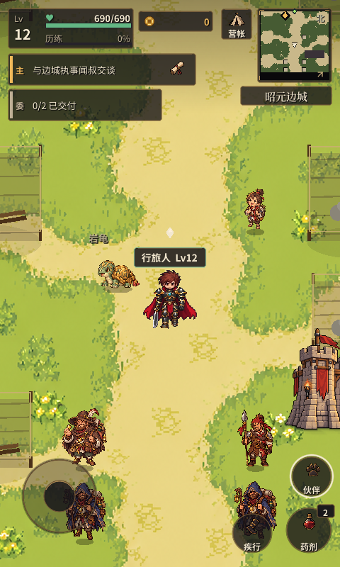
上轮审查画面 · 野外 HUD 本轮原生运行 · 野外 HUD
本轮原生运行 · 野外 HUD
上轮审查画面 · 人物养成 本轮原生运行 · 人物养成
本轮原生运行 · 人物养成
上轮审查画面 · 装备整备 本轮原生运行 · 装备整备
本轮原生运行 · 装备整备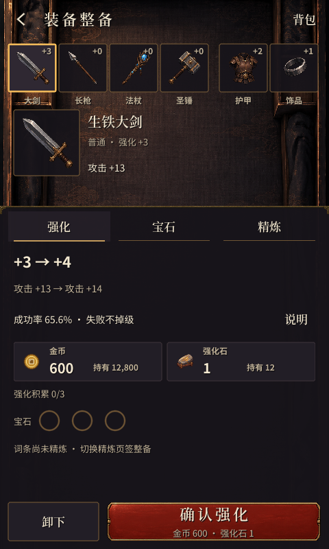
上轮审查画面 · 行旅背包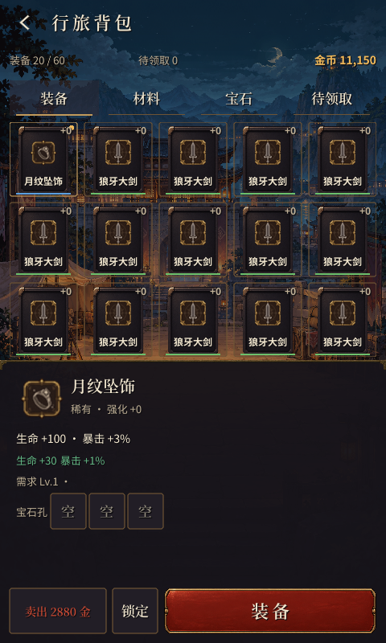
本轮原生运行 · 行旅背包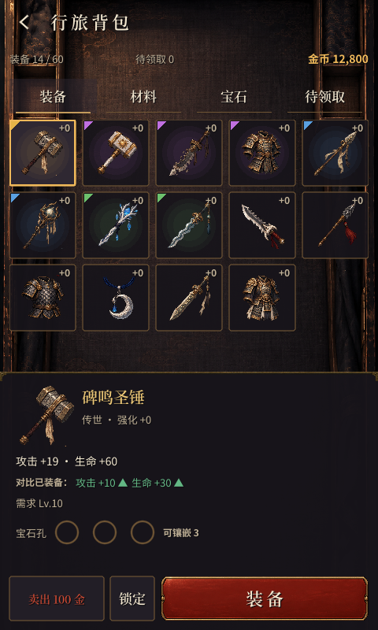
上轮审查画面 · 连续战斗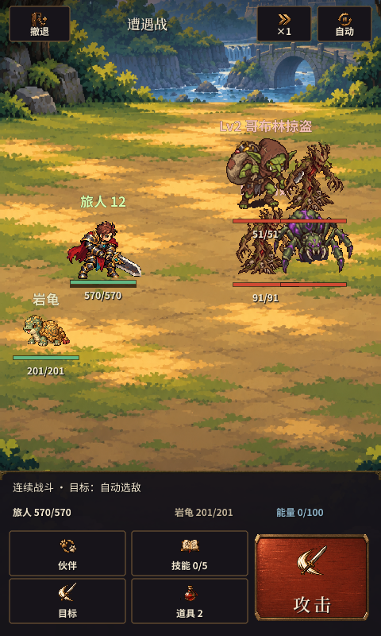
本轮原生运行 · 连续战斗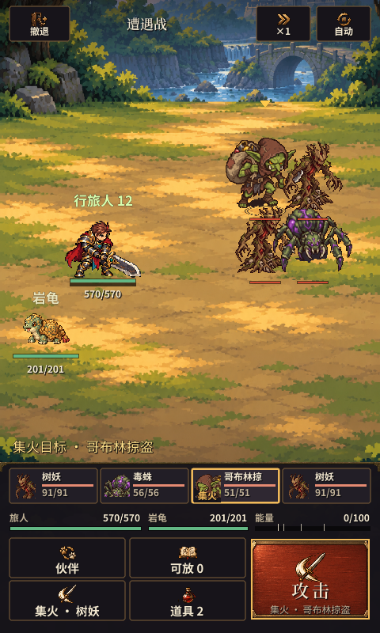
上轮审查画面 · 地区行路图 本轮原生运行 · 地区行路图
本轮原生运行 · 地区行路图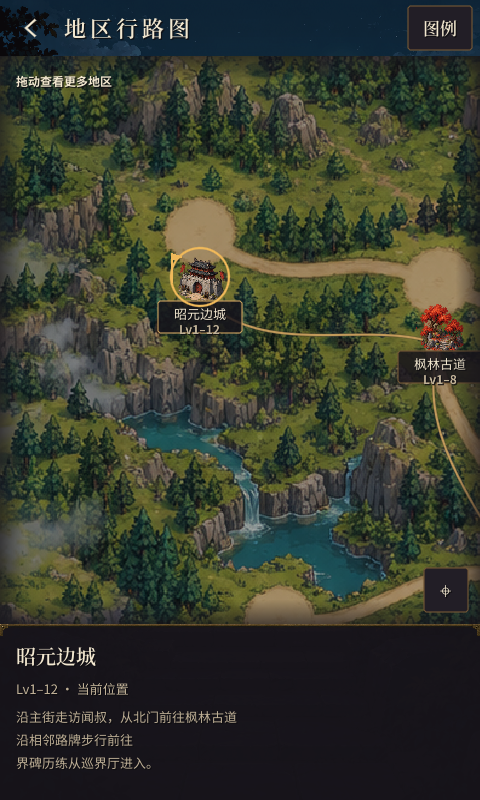
上轮审查画面 · 出征筹备 本轮原生运行 · 出征筹备
本轮原生运行 · 出征筹备
上轮审查画面 · 旅人登记 本轮原生运行 · 旅人登记
本轮原生运行 · 旅人登记
上轮审查画面 · 建立旅人 本轮原生运行 · 建立旅人
本轮原生运行 · 建立旅人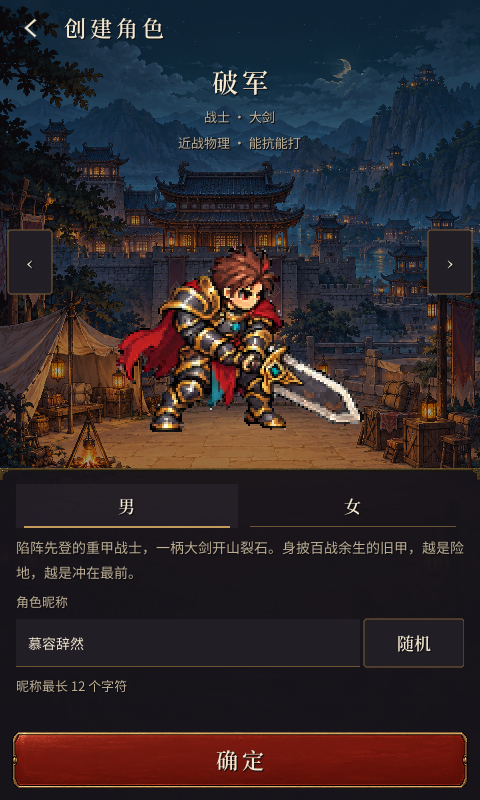
上轮审查画面 · 加载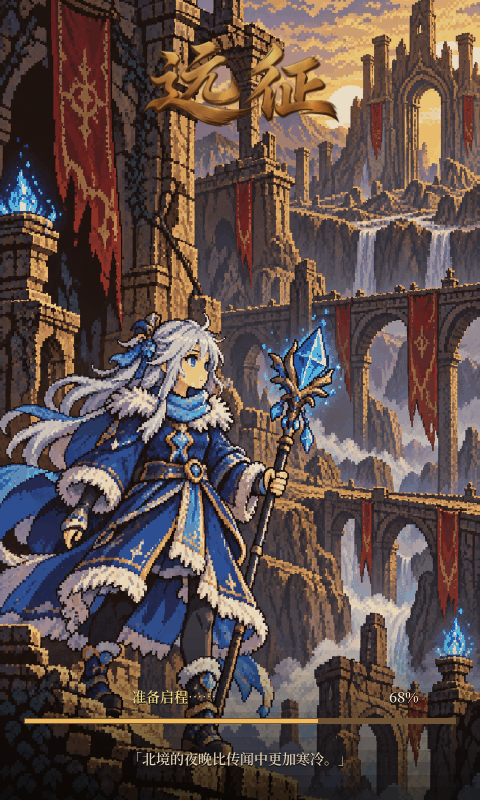
本轮原生运行 · 加载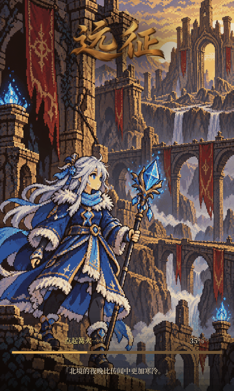
上轮审查画面 · 灵宠图鉴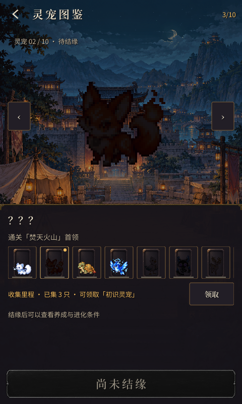
本轮原生运行 · 灵宠图鉴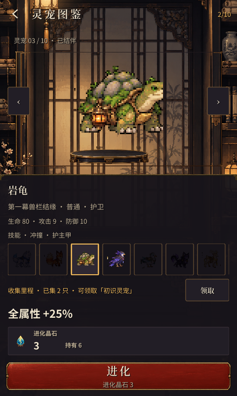
上轮审查画面 · 设置 本轮原生运行 · 设置
本轮原生运行 · 设置
上轮审查画面 · 远征手记 本轮原生运行 · 远征手记
本轮原生运行 · 远征手记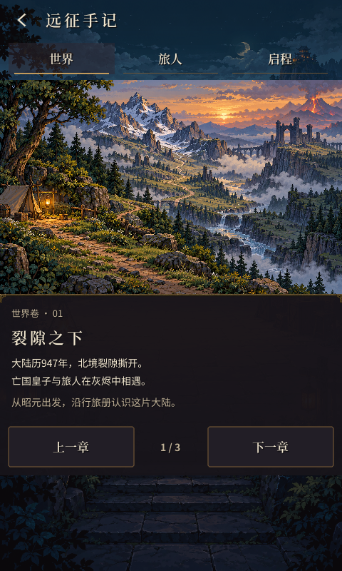
上轮审查画面 · 战斗技能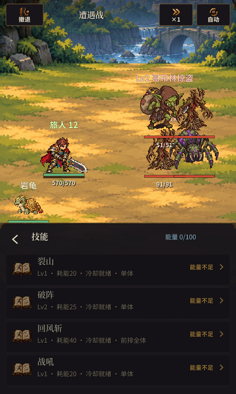
本轮原生运行 · 战斗技能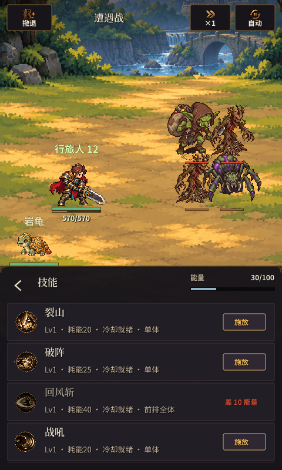
上轮审查画面 · 技能研习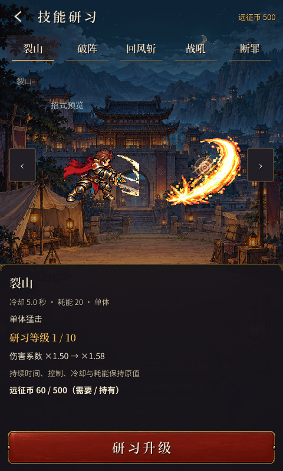
本轮原生运行 · 技能研习
长屏与关键状态
Cloud 验收提示词 整改说明